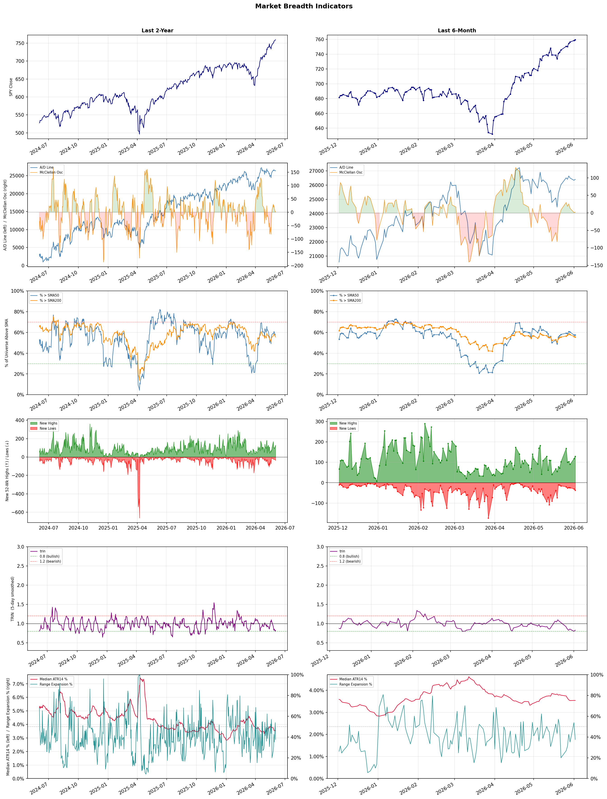

A daily research map of market breadth, industry rotation, and technical setups
| Item | Read |
|---|---|
| Regime | Selective Risk-On |
| Risk posture | Selective |
| Indices | QQQ 746.16 (+0.5% today) |
| Universe | 1,706 stocks tracked · 129 new 52-week highs · 30 active swing setups |
| Breadth | 57.6% of tracked stocks are above SMA50 — neutral range, new highs exceed new lows (129 vs 37) |
| Leadership | Semiconductors, Computer Hardware, and Solar |
| Weakest groups | Packaged Foods, Waste Management, and Financial Data & Stock Exchanges |
Use this report to prioritize research and chart review; validate entries, stops, liquidity, earnings, and risk before acting.
| Item | Read |
|---|---|
| Primary read | Selective Risk-On regime with Selective risk posture. |
| Research queue | VSH, ARM, HIMX, MU, POET |
| Leadership focus | Semiconductors, Computer Hardware, and Solar |
| Caution list | Packaged Foods, Waste Management, and Financial Data & Stock Exchanges |
| Review prompt | Check extension risk, chart location, fundamentals, valuation, and earnings before using any research row. |
| Item | Read |
|---|---|
| Primary read | 1 active risk warnings; use screen output as watchlist input only. |
| Bullish screens | AVGO, HIMX, MU, LOGI, STX |
| Bearish screens | ORLY |
| Alerts / levels | Automated trigger, stop, ATR, liquidity, reward/risk, and event-risk levels are pending future enrichment. |
| Review prompt | Open the linked chart, define trigger and invalidation, then check liquidity and event risk independently. |
Risk Posture: Selective — screen backdrop supports selective research in leading industries
Metric context: McClellan below -50 = elevated selling pressure; below -100 = washout territory. Range Expansion = share of stocks with daily range above their 20-day average. Signal Density = share of tracked names appearing in signal screens.
| Breadth Date | % > SMA50 | % > SMA200 | New Highs | New Lows | McClellan | Median Range | Avg Range | Median ATR14 | Range Expansion | Signal Density |
|---|---|---|---|---|---|---|---|---|---|---|
| 2026-06-02 | 57.6% | 55.6% | 129 | 37 | 2.0 | 3.0% | 3.6% | 3.5% | 37.6% | 7.6% |

Prior comparison date: June 1, 2026
| Metric | Prior | Current | Change |
|---|---|---|---|
| Regime | Selective Risk-On | Selective Risk-On | unchanged |
| Risk Posture | Selective | Selective | unchanged |
| % > SMA50 | 57.4% | 57.6% | +0.2 pts |
| % > SMA200 | 56.0% | 55.6% | -0.5 pts |
| New Highs | 116 | 129 | +13 |
| New Lows | 31 | 37 | -6 |
Top-10 industries entering: Electrical Equipment & Parts. Top-10 industries leaving: REIT - Hotel & Motel. New multi-signal long setups: ALOY, BEAM, BMO, BVN, CDNS, CSCO, ERIC, EXTR, FTNT, HIMX. New multi-signal short setups: none.
| Status | Tickers | Read |
|---|---|---|
| Added | ALOY, BEAM, BMO, BVN, CDNS, CSCO, ERIC, EXTR | New technical screen matches vs prior report. |
| Removed | ABCL, ARM, ARMK, CRWD, DDOG, DELL, DOCN, ELV | No longer present in today's technical screen matches. |
| Still Active | AVGO, BB, BHP, ERO, GS, HBM, HUT, IBM | Appeared in both current and prior reports. |
| Promoted | none | Model Screen Score improved by at least 15 points. |
| Downgraded | none | Model Screen Score declined by at least 15 points. |
| Direction | Industry | ETF | Prior Rank | Current Rank | Days | Rank Change |
|---|---|---|---|---|---|---|
| Rose | Solar | TAN | 97 | 3 | 42 | +94 |
| Rose | Copper | COPX | 86 | 7 | 28 | +79 |
| Rose | Diagnostics & Research | N/A | 96 | 26 | 35 | +70 |
| Rose | Airlines | N/A | 82 | 17 | 35 | +65 |
| Rose | Aerospace & Defense | ITA | 83 | 18 | 28 | +65 |
Bull: The solar industry, as represented by the Solar ETF (TAN), is experiencing rising relative strength primarily due to a significant shift in the global energy landscape, where wind and solar power have overtaken gas as leading energy sources. This transition is underscored by headlines indicating that low-emission power is outperforming traditional electric supply, coupled with a bullish outlook for green ETFs as they gain traction amid increasing investments in renewable energy. Additionally, the recent achievement of TAN hitting a new 52-week high reflects strong investor confidence in solar stocks as they capitalize on the growing demand for sustainable energy solutions.
Bear: While the solar industry may currently be experiencing a rise in relative strength and investor enthusiasm, this could be misleading given the potential for overvaluation and the cyclical nature of the market. The recent headlines celebrating the ETF's new highs may not account for the underlying challenges, such as supply chain disruptions, rising material costs, and increasing competition from other renewable sources like wind, which could erode profit margins and hinder long-term growth. Additionally, the transition to renewable energy is often fraught with regulatory hurdles and geopolitical risks that could dampen the optimistic outlook for solar investments.
Verdict: The solar industry's rising relative strength, as seen in the Solar ETF (TAN), is fundamentally driven by a global shift towards renewable energy, with solar and wind power increasingly outpacing traditional fossil fuels in demand and investment. However, investors should remain cautious of potential overvaluation and the risks posed by supply chain disruptions, rising material costs, and regulatory hurdles that could impact profit margins and long-term growth prospects.
Sources: Yahoo Finance, Google News
Bull: Copper is experiencing rising relative strength primarily due to its critical role in the ongoing transition to alternative energy and technological advancements, as highlighted by the emphasis on AI, grid resilience, and commodities in recent headlines. The increasing demand for copper in electric vehicles, renewable energy infrastructure, and AI-driven technologies positions it favorably against traditional metals like gold and silver. Additionally, the mention of a "copper supercycle" and robust performance from US copper mining stocks further underscores the bullish sentiment and potential for significant returns in this sector.
Bear: While the narrative surrounding copper's role in the transition to alternative energy and technology is compelling, it overlooks several critical challenges. First, the anticipated demand may be overestimated due to potential supply chain disruptions and geopolitical risks, particularly in copper-rich regions like Chile, which could hinder production and drive costs higher. Additionally, the recent rally in copper prices may be more reflective of speculative trading rather than sustainable demand growth, suggesting that the current bullish sentiment could be built on shaky foundations.
Verdict: The rising trend in the copper industry is fundamentally driven by its essential role in the transition to alternative energy and technological advancements, particularly in electric vehicles and renewable energy infrastructure. However, key risks include potential supply chain disruptions and geopolitical tensions in major copper-producing regions, which could undermine production and inflate costs, suggesting that investors should remain cautious and monitor these factors closely.
Sources: Yahoo Finance, Google News
Bull: The Diagnostics & Research sector is experiencing a rising relative strength primarily due to increased investor confidence driven by positive market sentiment and strong growth projections. Recent headlines highlight significant stock price movements, such as Waters' 5.3% jump amid a sector-wide rally, and bullish analyses, like Agilent Technologies' potential 43.86% upside, indicating robust fundamentals and promising earnings potential. Additionally, the growing integration of AI in healthcare, as noted in U.S. News, is likely fueling innovation and investment in the sector, further enhancing its attractiveness to investors.
Bear: While the Diagnostics & Research sector may currently exhibit rising relative strength and positive sentiment, this could be misleading as it often reflects short-term market trends rather than sustainable growth. The headlines may overlook underlying challenges such as regulatory pressures, potential overvaluation of stocks, and the risk of technological disruptions that could undermine profitability. Furthermore, the integration of AI in healthcare, while promising, may lead to increased competition and market saturation, potentially diluting returns for existing players.
Verdict: The Diagnostics & Research sector's rising relative strength is fundamentally driven by heightened investor confidence stemming from strong growth projections and positive market sentiment, particularly as companies leverage AI to innovate and enhance their offerings. However, investors should remain cautious of the key risk posed by potential overvaluation and increased competition, which could undermine long-term profitability and lead to market corrections.
Sources: Google News
Bull: The rising relative strength of the airline industry can be attributed to a robust recovery in travel demand as evidenced by headlines highlighting strong performance from major players like United Airlines. Factors such as increasing consumer confidence, pent-up demand for leisure travel, and a potential rebound in business travel are driving optimism, as noted in reports from Barron's and Investor's Business Daily. Additionally, with strategic investments and operational efficiencies being discussed, the sector is poised for further gains, making it an attractive investment opportunity.
Bear: While the rising relative strength of the airline industry may suggest a recovery, it overlooks significant headwinds that could undermine this optimism. High fuel prices, ongoing labor shortages, and potential economic downturns could severely impact profit margins and operational efficiency. Additionally, the threat of new COVID-19 variants and geopolitical tensions could dampen travel demand, leading to volatility in earnings and investor sentiment.
Verdict: The airline industry's rising strength is fundamentally driven by a robust recovery in travel demand, bolstered by increasing consumer confidence and pent-up demand for both leisure and business travel. However, investors should remain cautious of key risks such as high fuel prices, ongoing labor shortages, and potential economic downturns, which could significantly impact profit margins and operational efficiency. As such, while the sector presents attractive investment opportunities, a careful assessment of these headwinds is essential before making any commitments.
Sources: Google News
Bull: The Aerospace & Defense sector is experiencing a rising relative strength primarily due to record-high NATO defense spending, which signals a sustained commitment to military investment across member nations. This trend is further supported by strategic advancements in technology, such as Ondas Holdings' integration of high-margin AI software into its defense portfolio, enhancing operational capabilities and profitability. Additionally, with smart investors recognizing the potential in the sector, particularly at a 20% discount, there is a growing bullish sentiment that is likely to drive further investment into the industry.
Bear: While record-high NATO defense spending may seem like a positive indicator for the Aerospace & Defense sector, it is important to consider that this spending could be a reactionary measure rather than a sustainable trend, especially as geopolitical tensions fluctuate. Additionally, the cooling off of European defense stocks suggests that the initial surge in military investment may be waning, raising concerns about the longevity of growth in this sector. Furthermore, the focus on high-margin AI software, like that of Ondas Holdings, may not be enough to offset potential declines in traditional defense contracts or budget constraints in the future.
Verdict: The Aerospace & Defense sector is likely experiencing rising relative strength due to sustained NATO defense spending and technological advancements that enhance operational capabilities, attracting investor interest. However, the key risk lies in the potential for this spending to be a reactionary response to geopolitical tensions, which could lead to a decline in growth if military budgets are constrained or if geopolitical stability returns. Investors should monitor geopolitical developments and budgetary trends closely to assess the sustainability of this growth.
Sources: Yahoo Finance, Google News
| Direction | Industry | ETF | Prior Rank | Current Rank | Days | Rank Change |
|---|---|---|---|---|---|---|
| Fell | Utilities - Regulated Gas | XLU | 21 | 94 | 35 | -73 |
| Fell | Apparel Manufacturing | N/A | 8 | 78 | 42 | -70 |
| Fell | Oil & Gas E&P | XOP | 14 | 84 | 14 | -70 |
| Fell | Oil & Gas Drilling | XES | 2 | 70 | 14 | -68 |
| Fell | Engineering & Construction | N/A | 13 | 80 | 28 | -67 |
Bear: While the bull analyst highlights macroeconomic pressures and regulatory uncertainty as key factors affecting the Utilities - Regulated Gas sector, it is essential to consider that these challenges may exacerbate existing vulnerabilities within the sector, such as aging infrastructure and rising operational costs. Furthermore, the potential for increased interest rates could disproportionately impact utilities, which are typically capital-intensive and rely on debt financing, leading to squeezed margins and reduced profitability in a rising rate environment. This combination of internal weaknesses and external pressures may result in a prolonged period of underperformance for the sector, making it a risky investment choice.
Bull: The relative weakness in the Utilities - Regulated Gas sector, as indicated by the XLU ETF, can be attributed to macroeconomic pressures, particularly the Federal Reserve's pivot to focus on inflation under the incoming chair, which may lead to rising interest rates and increased borrowing costs for utilities. Additionally, the upcoming PJM’s March 2027 Data Center Framework Decision could introduce uncertainty regarding regulatory frameworks and potential costs for gas utilities, further dampening investor sentiment in the sector.
Verdict: The Utilities - Regulated Gas sector is experiencing a downturn primarily due to macroeconomic pressures, including the Federal Reserve's focus on inflation, which may lead to rising interest rates and increased borrowing costs that disproportionately affect capital-intensive utilities. Additionally, the potential regulatory uncertainties from PJM’s upcoming Data Center Framework Decision could further complicate the operational landscape. Investors should be cautious, as the combination of these external pressures and the sector's inherent vulnerabilities, such as aging infrastructure and rising operational costs, could lead to prolonged underperformance and squeezed margins.
Sources: Yahoo Finance, Google News
Bear: While the bull analyst points to potential adaptability and innovation within the Apparel Manufacturing industry, the persistent decline in relative strength and significant drops like Columbia Sportswear's 5.4% suggest deeper, systemic issues beyond temporary market fluctuations. Consumer sentiment is increasingly shifting towards sustainability and ethical consumption, which many traditional apparel companies are ill-prepared to address, potentially leading to a long-term decline in demand and profitability as consumers prioritize brands that align with their values over established names. Additionally, the macroeconomic pressures, including rising inflation and interest rates, are likely to continue squeezing disposable incomes, further dampening consumer spending on non-essential items like apparel.
Bull: The Apparel Manufacturing industry is experiencing a relative decline in strength primarily due to sector-wide selling pressures, as indicated by headlines like Columbia Sportswear's 5.4% drop amid broader market trends. This could be attributed to macroeconomic factors such as inflationary pressures affecting consumer spending and shifting preferences towards experiences over apparel, which are impacting sales across the sector. However, the optimism reflected in articles highlighting well-poised stocks for growth suggests that these challenges may be temporary, as companies adapt and innovate in response to changing market dynamics.
Verdict: The Apparel Manufacturing industry is facing a fundamental decline driven by macroeconomic pressures, such as rising inflation and shifting consumer preferences towards sustainability and experiences over traditional apparel. While companies may adapt through innovation, the key risk lies in their ability to align with evolving consumer values; failure to do so could lead to a long-term decrease in demand and profitability. Investors should closely monitor brands that prioritize sustainability and ethical practices, as they may emerge stronger in this challenging landscape.
Sources: Google News
Bear: While the bull analyst highlights geopolitical tensions and high crude prices as supportive factors for the Oil & Gas E&P sector, these same elements could lead to significant volatility and uncertainty that deter long-term investment. The rising focus on sustainability and renewable energy, coupled with potential regulatory pressures and a shift in capital towards technology sectors, suggests that the current gains in energy ETFs may not be sustainable. Additionally, if peace deals are reached, it could lead to an oversupply situation, drastically reducing prices and negatively impacting the profitability of E&P companies.
Bull: The Oil & Gas E&P sector is experiencing a relative strength decline primarily due to heightened geopolitical tensions, particularly the Hormuz crisis, which has kept crude prices elevated but also introduced significant supply risks and volatility. As noted in recent headlines, while energy ETFs have shown impressive gains, the overall sentiment may be tempered by concerns over sustainability and the potential for peace deals that could stabilize supply, leading to a cautious outlook among investors despite the current high prices. Additionally, the focus on AI and technology advancements in capital expenditures may be drawing investor attention away from traditional energy sectors, further impacting relative strength.
Verdict: The Oil & Gas E&P sector is currently facing a decline in relative strength due to heightened geopolitical tensions that, while initially supporting elevated crude prices, introduce significant volatility and uncertainty that could deter long-term investment. The key risk lies in the potential for peace deals that may stabilize supply, leading to oversupply and a sharp drop in prices, which would adversely affect the profitability of E&P companies. Investors should remain cautious and consider reallocating capital towards sectors with more sustainable growth prospects, particularly in technology and renewables.
Sources: Yahoo Finance, Google News
Bear: While the bull analyst highlights potential upside in select stocks and the impact of fluctuating oil prices, the broader trend in the Oil & Gas Drilling sector remains concerning due to persistent relative weakness and a lack of sustainable demand growth. Rising interest rates are likely to further strain capital investment in the sector, and the accelerating shift towards renewable energy sources raises significant long-term questions about the viability and profitability of traditional oil and gas companies. Additionally, geopolitical uncertainties and regulatory pressures could exacerbate volatility, making the investment landscape increasingly risky.
Bull: The relative weakness in the Oil & Gas Drilling sector, as reflected in the headlines, is likely driven by a combination of macroeconomic factors, including fluctuating oil prices and broader market sentiment towards energy investments. Despite recent headlines indicating a surge in oil prices and the potential for strong performance in specific stocks, such as those highlighted by Zacks and Yahoo Finance, the overall industry may be facing headwinds from rising interest rates and concerns over long-term demand shifts towards renewable energy, leading to cautious investor sentiment. This backdrop creates a challenging environment for the sector, even as select companies demonstrate strong upside potential.
Verdict: The Oil & Gas Drilling sector is experiencing a downturn primarily due to macroeconomic pressures, including rising interest rates that dampen capital investment and a persistent shift towards renewable energy, which raises concerns about long-term demand for fossil fuels. Investors should be cautious, as the bear case highlights significant risks from geopolitical uncertainties and regulatory pressures that could further destabilize the market and challenge the profitability of traditional oil and gas companies. It may be prudent to focus on companies with strong fundamentals and adaptability to changing energy landscapes while remaining vigilant about broader economic indicators.
Sources: Yahoo Finance, Google News
Bear: While the bull analyst highlights potential growth from the "AI Infrastructure Boom," it's crucial to recognize that the current declines in the Engineering & Construction sector are indicative of deeper, systemic issues, including rising interest rates and persistent inflation that could severely constrain project financing and overall construction activity. Furthermore, the lack of buyer interest, as evidenced by IL&FS Engineering's situation, suggests that investor confidence is waning, and the sector may face prolonged challenges as economic uncertainty looms, overshadowing any potential benefits from emerging technologies.
Bull: The Engineering & Construction sector is experiencing a decline in relative strength primarily due to sector-wide selling pressures, as evidenced by headlines such as Everus Construction Group's 5.2% drop and IL&FS Engineering's 4.99% loss, indicating a broader market sentiment shift. Additionally, the overall market is reacting to macroeconomic factors, including rising interest rates and inflation concerns, which can adversely impact construction spending and project financing, leading to increased volatility and reduced investor confidence in the sector. However, the mention of an "AI Infrastructure Boom" suggests potential for future growth, indicating that while the sector is currently under pressure, there are underlying trends that could drive a rebound.
Verdict: The Engineering & Construction sector's current decline is primarily driven by macroeconomic pressures, including rising interest rates and inflation, which are constraining project financing and dampening investor confidence. While the potential for growth from the "AI Infrastructure Boom" exists, the key risk remains that systemic issues may overshadow these opportunities, leading to prolonged challenges and reduced construction activity. Investors should approach the sector cautiously, monitoring economic indicators closely before making any significant commitments.
Sources: Google News
| Industry | Rank | ETF | 7d | 14d | 28d | 42d | Chg 42d | Size | 20D | 60D | Composite | Active Setups |
|---|---|---|---|---|---|---|---|---|---|---|---|---|
| Semiconductors | 1 | SOXX | 1 | 1 | 1 | 1 | 0 | 36 | 38.8% | 122.4% | 0.991 | 3 |
| Computer Hardware | 2 | XLK | 2 | 6 | 3 | 7 | +5 | 14 | 39.3% | 87.3% | 0.991 | 2 |
| Solar | 3 | TAN | 3 | 19 | 30 | 97 | +94 | 8 | 51.2% | 68.2% | 0.973 | 1 |
| Electronic Components | 4 | XLK | 8 | 8 | 4 | 3 | -1 | 9 | 27.1% | 73.3% | 0.971 | 1 |
| Trucking | 5 | IYT | 10 | 13 | 20 | 5 | 0 | 5 | 26.0% | 41.1% | 0.943 | 2 |
| Communication Equipment | 6 | IYZ | 4 | 5 | 6 | 4 | -2 | 17 | 24.1% | 68.3% | 0.936 | 3 |
| Copper | 7 | COPX | 41 | 68 | 86 | 32 | +25 | 6 | 27.6% | 18.9% | 0.932 | 3 |
| Steel | 8 | SLX | 9 | 21 | 14 | 23 | +15 | 6 | 21.2% | 36.9% | 0.931 | 1 |
| Semiconductor Equipment & Materials | 9 | SOXX | 5 | 10 | 2 | 2 | -7 | 18 | 15.5% | 75.2% | 0.924 | 1 |
| Electrical Equipment & Parts | 10 | XLI | 6 | 16 | 7 | 10 | 0 | 11 | 27.2% | 57.9% | 0.915 | 2 |
Rank columns (7d–42d) show the industry's rank that many trading days ago — lower is stronger. Chg 42d = rank change vs 42 trading days ago — positive means the industry moved up. 20D and 60D are the mean stock return within the industry over that period. Active Setups: count of today's swing-trade candidates from this industry appearing across all signal screens.
| Industry | Rank | ETF | 7d | 14d | 28d | 42d | Chg 42d | Size | 20D | 60D | Composite | Active Setups |
|---|---|---|---|---|---|---|---|---|---|---|---|---|
| Packaged Foods | 98 | XLP | 97 | 96 | 97 | 96 | -2 | 17 | -8.2% | -18.5% | 0.079 | 2 |
| Waste Management | 97 | N/A | 83 | 66 | 96 | 94 | -3 | 5 | -5.4% | -10.9% | 0.129 | 0 |
| Financial Data & Stock Exchanges | 96 | N/A | 77 | 59 | 84 | 86 | -10 | 7 | -5.0% | -9.1% | 0.134 | 2 |
| Household & Personal Products | 95 | XLP | 92 | 83 | 85 | 98 | +3 | 12 | -7.4% | -15.5% | 0.141 | 3 |
| Utilities - Regulated Gas | 94 | XLU | 68 | 54 | 26 | 31 | -63 | 6 | -8.3% | -2.5% | 0.146 | 0 |
| Industrial Distribution | 93 | N/A | 96 | 91 | 69 | 41 | -52 | 6 | -7.6% | -3.7% | 0.168 | 2 |
| Discount Stores | 92 | XRT | 94 | 51 | 81 | 80 | -12 | 6 | -3.3% | -8.7% | 0.168 | 1 |
| REIT - Mortgage | 91 | N/A | 93 | 76 | 63 | 75 | -16 | 15 | -5.4% | -3.8% | 0.171 | 3 |
| Utilities - Regulated Electric | 90 | XLU | 70 | 57 | 76 | 77 | -13 | 29 | -4.0% | -5.7% | 0.181 | 1 |
| Furnishings, Fixtures & Appliances | 89 | N/A | 98 | 98 | 78 | 82 | -7 | 7 | -4.1% | -10.8% | 0.185 | 1 |
Rank columns (7d–42d) show the industry's rank that many trading days ago — lower is stronger. Chg 42d = rank change vs 42 trading days ago — positive means the industry moved up. 20D and 60D are the mean stock return within the industry over that period. Active Setups: count of today's swing-trade candidates from this industry appearing across all signal screens.
These are research candidates from top-ranked stocks, capped at five names per industry to avoid over-concentration. Returns shown (60D, 120D, 250D) are historical — they reflect where prices have already moved, not forward expectations. Extension Risk flags names that may require extra patience or a better entry point. They are not buy signals.
Chart: TV = TradingView chart (opens in browser); PDF = local chart file (if downloaded).
| Ticker | Name | Industry | Industry Rank | Market Cap | 60D Hist | 120D Hist | 250D Hist | Extension Risk | Research Reason | Chart |
|---|---|---|---|---|---|---|---|---|---|---|
| VSH | Vishay Intertechnology | Semiconductors | 1 | 2.3B | 274.4% | 309.0% | 322.8% | Very extended | Top-ranked in industry; very extended | TV · PDF |
| ARM | Arm Holdings | Semiconductors | 1 | 121.5B | 252.1% | 188.1% | 212.7% | Very extended | Top-ranked in industry; very extended | TV · PDF |
| HIMX | Himax Technologies | Semiconductors | 1 | 1.3B | 224.1% | 158.1% | 185.5% | Very extended | Top-ranked in industry; very extended | TV · PDF |
| MU | Micron Technology | Semiconductors | 1 | 416.8B | 187.4% | 330.9% | 940.7% | Very extended | Top-ranked in industry; very extended | TV · PDF |
| POET | POET Technologies | Semiconductors | 1 | 959.0M | 120.1% | 121.8% | 218.4% | Very extended | Top-ranked in industry; very extended | TV · PDF |
| DELL | Dell Technologies | Computer Hardware | 2 | 97.1B | 197.2% | 210.0% | 289.0% | Very extended | Top-ranked in industry; very extended | TV · PDF |
| IONQ | IonQ Inc | Computer Hardware | 2 | 13.1B | 99.8% | 31.3% | 79.4% | Extended | Top-ranked in industry; extended | TV · PDF |
| QBTS | D-Wave Quantum | Computer Hardware | 2 | 6.8B | 60.9% | 5.2% | 69.2% | Extended | Top-ranked in industry; extended | TV · PDF |
| SMCI | Super Micro Computer | Computer Hardware | 2 | 18.8B | 60.2% | 41.8% | 16.2% | Extended | Top-ranked in industry; extended | TV · PDF |
| RGTI | Rigetti Computing | Computer Hardware | 2 | 5.6B | 58.0% | -4.9% | 123.3% | Extended | Top-ranked in industry; extended | TV · PDF |
| SEDG | SolarEdge Technologies | Solar | 3 | 2.0B | 135.0% | 158.0% | 333.5% | Very extended | Top-ranked in industry; very extended | TV · PDF |
| SHLS | Shoals Technologies | Solar | 3 | 956.1M | 118.2% | 55.4% | 155.9% | Very extended | Top-ranked in industry; very extended | TV · PDF |
| ENPH | Enphase Energy | Solar | 3 | 5.3B | 79.8% | 131.5% | 65.3% | Extended | Top-ranked in industry; extended | TV · PDF |
| FSLR | First Solar | Solar | 3 | 20.3B | 64.4% | 21.5% | 95.1% | Extended | Top-ranked in industry; extended | TV · PDF |
| NXT | Nextpower | Solar | 3 | 15.1B | 50.1% | 69.7% | 162.5% | Extended | Top-ranked in industry; extended | TV · PDF |
| FLEX | Flex Ltd | Electronic Components | 4 | 22.0B | 166.1% | 136.1% | 268.9% | Very extended | Top-ranked in industry; very extended | TV · PDF |
| OUST | Ouster | Electronic Components | 4 | 1.3B | 127.1% | 80.4% | 244.0% | Very extended | Top-ranked in industry; very extended | TV · PDF |
| TTMI | TTM Technologies | Electronic Components | 4 | 9.1B | 104.3% | 138.1% | 454.6% | Very extended | Top-ranked in industry; very extended | TV · PDF |
| GLW | Corning | Electronic Components | 4 | 105.8B | 62.5% | 127.0% | 294.6% | Extended | Top-ranked in industry; extended | TV · PDF |
| RAL | Ralliant | Electronic Components | 4 | 5.0B | 38.9% | 20.8% | 30.5% | Constructive | Top-ranked in industry | TV · PDF |
These are technical screen matches from existing signal files. They are not trade recommendations. Trigger, stop, ATR, liquidity, reward/risk, and event risk still require separate validation until those inputs are available.
Model Screen Score is weighted by signal count, industry rank, freshness, and setup type. It is not a probability of profit, expected return, or suitability rating. Industry cap: max 3 candidates per industry.
Signal glossary: Momentum Pullback = stock in an uptrend that has pulled back 10–30% and shows re-entry conditions. MA Compression = short- and long-term moving averages converging, often preceding a directional move. Three-Day Up/Down = three consecutive closes in the same direction. New 52Wk High/Low = price reached a new annual extreme.
Chart: TV = TradingView chart (opens in browser); PDF = local chart file (if downloaded).
| Ticker | Industry | Setups | Close | Industry Rank | Signal Count | Model Screen Score | Reason | Chart |
|---|---|---|---|---|---|---|---|---|
| AVGO | Semiconductors | New 52Wk High; Three-Day Up | 481.57 | 1 | 2 | 100 | Multi-signal; top industry breakout | TV · PDF |
| HIMX | Semiconductors | New 52Wk High; Three-Day Up | 23.98 | 1 | 2 | 100 | Multi-signal; top industry breakout | TV · PDF |
| MU | Semiconductors | New 52Wk High; Three-Day Up | 1064.10 | 1 | 2 | 100 | Multi-signal; top industry breakout | TV · PDF |
| LOGI | Computer Hardware | New 52Wk High; Three-Day Up | 126.69 | 2 | 2 | 100 | Multi-signal; top industry breakout | TV · PDF |
| STX | Computer Hardware | New 52Wk High; Three-Day Up | 926.61 | 2 | 2 | 100 | Multi-signal; top industry breakout | TV · PDF |
| WDC | Computer Hardware | New 52Wk High; Three-Day Up | 563.10 | 2 | 2 | 100 | Multi-signal; top industry breakout | TV · PDF |
| WERN | Trucking | New 52Wk High; Three-Day Up | 42.99 | 5 | 2 | 93 | Multi-signal; top industry breakout | TV · PDF |
| CSCO | Communication Equipment | New 52Wk High; Three-Day Up | 128.00 | 6 | 2 | 93 | Multi-signal; top industry breakout | TV · PDF |
| ERIC | Communication Equipment | New 52Wk High; Three-Day Up | 13.74 | 6 | 2 | 93 | Multi-signal; top industry breakout | TV · PDF |
| EXTR | Communication Equipment | New 52Wk High; Three-Day Up | 29.48 | 6 | 2 | 93 | Multi-signal; top industry breakout | TV · PDF |
| ERO | Copper | Momentum Pullback; Three-Day Up | 32.20 | 7 | 2 | 93 | Multi-signal; top industry pullback | TV · PDF |
| HBM | Copper | New 52Wk High; Three-Day Up | 31.87 | 7 | 2 | 93 | Multi-signal; top industry breakout | TV · PDF |
| BB | Software - Infrastructure | New 52Wk High; Three-Day Up | 10.32 | 12 | 2 | 85 | Multi-signal; new-high strength | TV · PDF |
| FTNT | Software - Infrastructure | New 52Wk High; Three-Day Up | 148.86 | 12 | 2 | 85 | Multi-signal; new-high strength | TV · PDF |
| NET | Software - Infrastructure | New 52Wk High; Three-Day Up | 272.66 | 12 | 2 | 85 | Multi-signal; new-high strength | TV · PDF |
| ALOY | Other Industrial Metals & Mining | Momentum Pullback; Three-Day Up | 11.64 | 14 | 2 | 85 | Multi-signal; pullback setup | TV · PDF |
| BHP | Other Industrial Metals & Mining | New 52Wk High; Three-Day Up | 93.15 | 14 | 2 | 85 | Multi-signal; new-high strength | TV · PDF |
| BMO | Banks - Diversified | New 52Wk High; Three-Day Up | 165.38 | 20 | 2 | 77 | Multi-signal; new-high strength | TV · PDF |
| MOD | Auto Parts | New 52Wk High; Three-Day Up | 306.89 | 25 | 2 | 77 | Multi-signal; new-high strength | TV · PDF |
| GS | Capital Markets | New 52Wk High; Three-Day Up | 1064.58 | 27 | 2 | 70 | Multi-signal; new-high strength | TV · PDF |
| HUT | Capital Markets | New 52Wk High; Three-Day Up | 133.02 | 27 | 2 | 70 | Multi-signal; new-high strength | TV · PDF |
| MS | Capital Markets | New 52Wk High; Three-Day Up | 214.98 | 27 | 2 | 70 | Multi-signal; new-high strength | TV · PDF |
| CDNS | Software - Application | New 52Wk High; Three-Day Up | 416.39 | 37 | 2 | 70 | Multi-signal; new-high strength | TV · PDF |
| SKM | Telecom Services | New 52Wk High; Three-Day Up | 46.00 | 55 | 2 | 65 | Multi-signal; new-high strength | TV · PDF |
| MPC | Oil & Gas Refining & Marketing | New 52Wk High; Three-Day Up | 263.06 | 58 | 2 | 65 | Multi-signal; new-high strength | TV · PDF |
| IBM | Information Technology Services | New 52Wk High; Three-Day Up | 329.23 | 61 | 2 | 55 | Multi-signal; new-high strength | TV · PDF |
| VNET | Information Technology Services | Momentum Pullback; Three-Day Up | 10.78 | 61 | 2 | 55 | Multi-signal; pullback setup | TV · PDF |
| BEAM | Biotechnology | Momentum Pullback | 28.96 | 51 | 2 | 50 | Multi-signal; pullback setup | TV · PDF |
| BVN | Other Precious Metals & Mining | Momentum Pullback | 34.79 | 56 | 2 | 50 | Multi-signal; pullback setup | TV · PDF |
Bearish setups — stocks making new lows or showing persistent downside patterns. Validate carefully before acting.
| Ticker | Industry | Setups | Close | Industry Rank | Signal Count | Model Screen Score | Reason | Chart |
|---|---|---|---|---|---|---|---|---|
| ORLY | Auto Parts | New 52Wk Low; Three-Day Down | 86.23 | 25 | 2 | 47 | Multi-signal; new-low weakness | TV · PDF |
How To Use This Report
| Use | Purpose |
|---|---|
| Market map | Start with breadth, regime, risk warnings, and what changed since the prior report. |
| Industry scan | Use leading, deteriorating, rising, and declining industries to focus research. |
| Research queue | Treat long-term candidates as names for deeper fundamental, valuation, and chart review. |
| Technical review | Treat bullish and bearish screen matches as watchlist inputs that require independent trigger, stop, liquidity, and event-risk checks. |
| Source follow-up | Use chart links and source files to verify raw inputs before relying on any row. |
What This Report Is Not
| Not | Meaning |
|---|---|
| Investment advice | The report does not evaluate personal objectives, risk tolerance, tax situation, account type, or suitability. |
| Buy/sell recommendation | Named tickers are research candidates or screen matches, not recommendations to transact. |
| Price target | The report does not provide fair value estimates, targets, or expected returns. |
| Trade plan | Trigger, stop, sizing, reward/risk, liquidity, and event-risk review remain separate user work. |
| Performance claim | Model Screen Score is not validated historical performance or a forecast of future results. |
| Item | Note |
|---|---|
| Version | Daily Report Methodology v1 |
| Model Screen Score | Screen-fit rank based on signal count, industry rank, freshness, and setup type. |
| Not predictive proof | The score is not expected return, probability of profit, historical validation, or suitability analysis. |
| Industry ranks | Composite industry ranks use existing daily ranking outputs and historical rank columns when available. |
| Research candidates | Long-term rows are research candidates from ranked stocks and leading industries, with historical returns labeled as historical only. |
| Technical matches | Bullish and bearish rows are screen matches requiring independent chart, trigger, stop, liquidity, and event-risk review. |
| Source | Status | Rows | Path |
|---|---|---|---|
| Market breadth | present | 1254 | breadth_20260602.csv |
| Industry composite rankings | present | 98 | all_industry_composite_20260602.csv |
| Top ranked stocks | present | 130 | top_ranked_composite_20260602.csv |
| All ranked stocks | present | 1706 | all_stocks_composite_sorted_20260602.csv |
| Top momentum pullbacks | present | 1801 | top_momentum_pullbacks_20260602.csv |
| MA compression | present | 1801 | ma_compression_stocks_20260602.csv |
| Three-day up/down | present | 275 | three_day_up_down_stocks_20260602.csv |
| New 52-week members | present | 166 | breadth_new_52wk_members_20260602.csv |
This report is generated from automated technical screens and is for informational and research purposes only. It is not investment advice, a solicitation, or a recommendation to buy or sell any security. Past performance is not indicative of future results. You are solely responsible for your own investment decisions. Consult a licensed financial advisor before acting on any information herein.